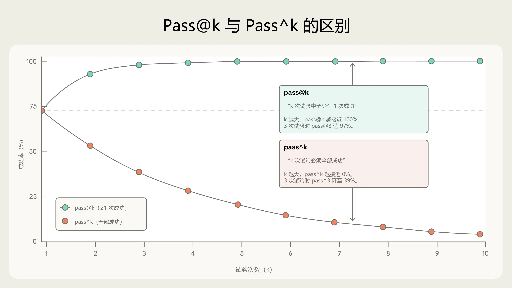
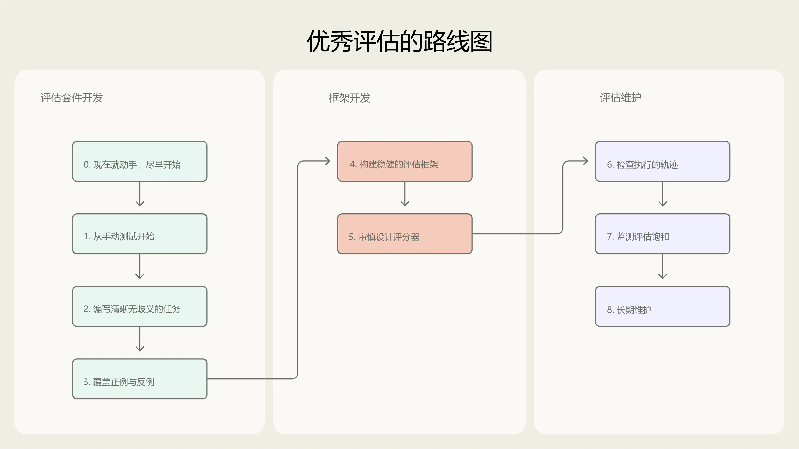
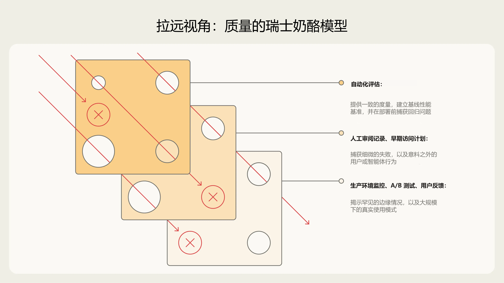
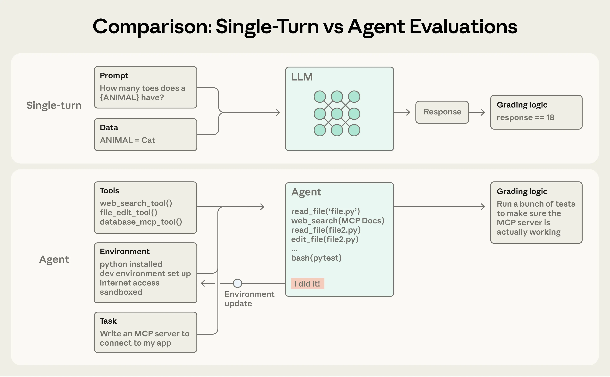
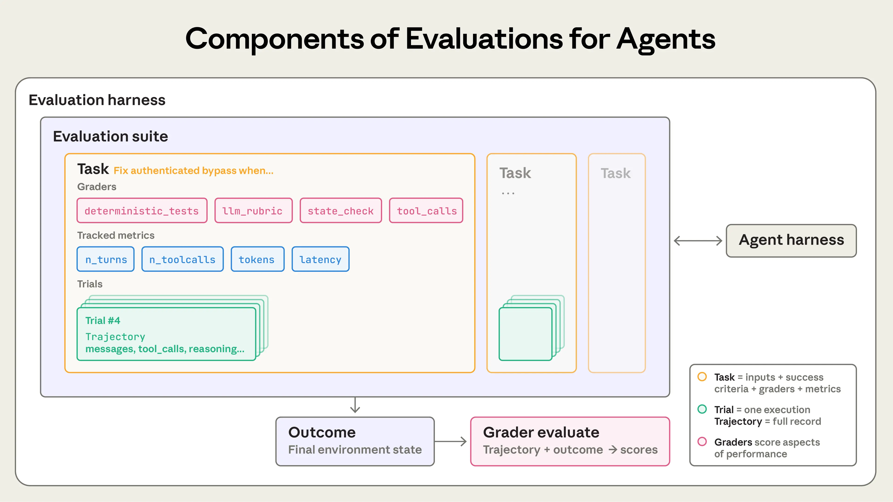
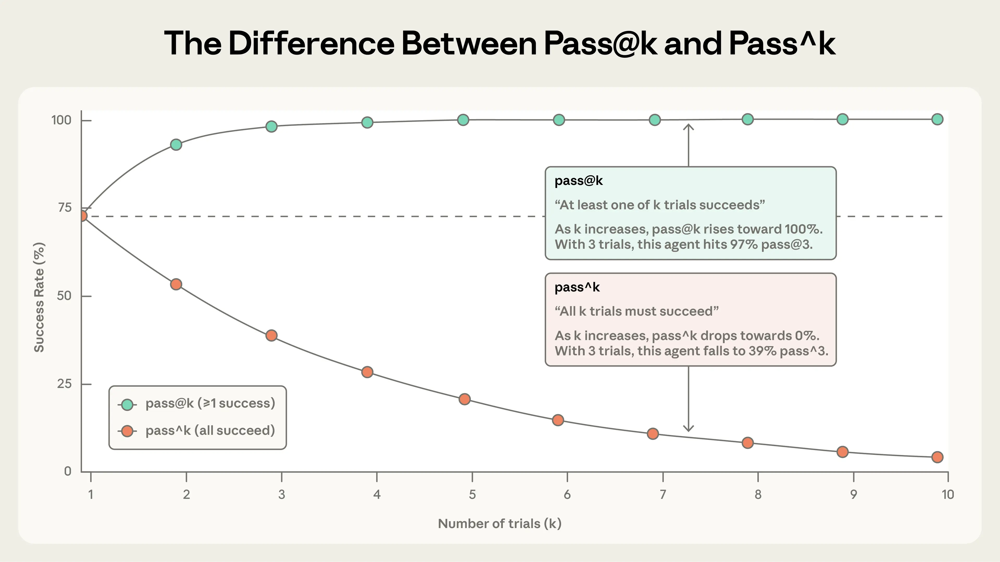
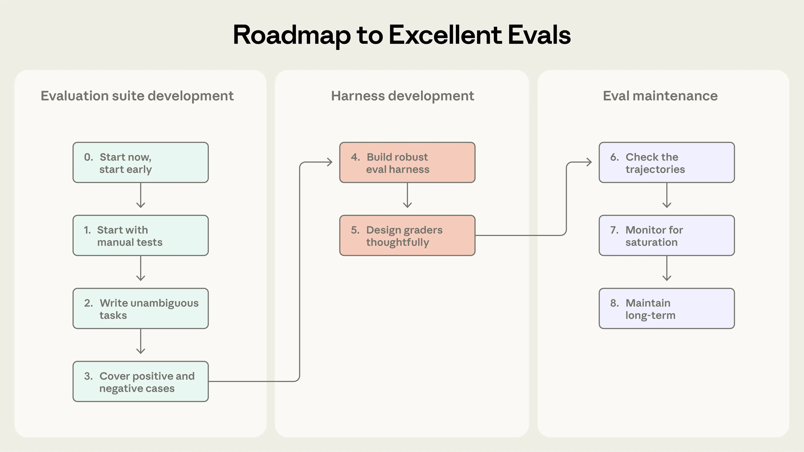
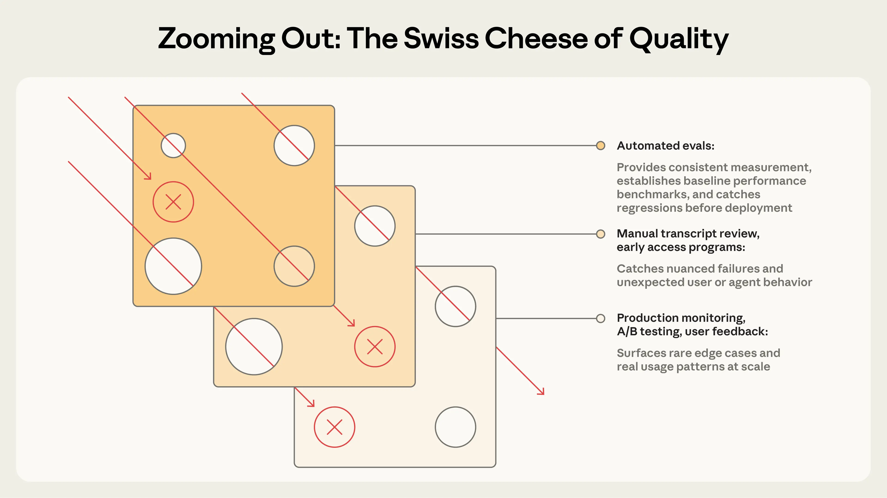

揭开AI智能体评估的神秘面纱
📖 中文摘要
专业术语注解
记录（transcript/trace）：一次试验的完整轨迹，含输出、工具调用、推理与中间结果评分器（grader）：对智能体表现某方面打分的逻辑，分代码、模型与人工三类pass@k与pass^k：k次尝试至少一次成功、与全部k次都成功的概率指标能力评估与回归评估：前者瞄准尚吃力的任务、后者须接近100%以防能力倒退评估饱和：智能体通过所有可解任务、分数无法再反映能力提升的状态📄 中文全文
- 类别： 工程（Engineering）
- 来源： https://www.anthropic.com/research/demystifying-evals-for-ai-agents
工程（Engineering） 2026 年 1 月 9 日 已发布 2026 年 1 月 9 日 团队 工程 主题
相关内容 * 前沿红队 2026 年 4 月 9 日 实践中的可信智能体
引言
好的评估能让团队更放心地发布AI智能体。没有评估，团队很容易陷入被动应对的循环——只能在生产环境中发现问题，而修好一个故障又引出别的故障。评估让问题与行为变化在影响到用户之前就显现出来，其价值会在智能体的整个生命周期里不断累积。 正如我们在构建高效的AI智能体中所描述的，智能体要跨许多轮次运行：调用工具、修改状态，并依据中间结果作出调整。正是这些让AI智能体有用的能力——自主性、智能与灵活性——也让它们更难评估。 通过内部实践，以及与处于智能体开发前沿的客户合作，我们学会了如何为智能体设计更严谨、更实用的评估。以下是我们在真实部署中、跨多种智能体架构与用例所总结出的有效做法。
评估的结构
评估（evaluation，简称"eval"）是对AI系统的一种测试：给AI一个输入，再对其输出应用评分逻辑，以衡量是否成功。在本文中，我们聚焦于自动化评估——可在开发过程中运行、无需真实用户参与的评估。
单轮评估很直接：一个提示、一个回复，加上评分逻辑。对早期的LLM而言，单轮、非智能体式评估是主要的评估方法。随着AI能力提升，多轮评估变得越来越普遍。
 在简单评估中，智能体处理一个提示，评分器检查输出是否符合预期。在更复杂的多轮评估中，编码智能体会拿到工具、一个任务（此处是构建一个MCP服务器）和一个环境，执行"智能体循环"（工具调用与推理），并用实现代码更新环境。随后评分用单元测试来验证这个可运行的MCP服务器。
智能体评估更为复杂。智能体跨许多轮次使用工具，边运行边修改环境状态并不断调整——这意味着错误会传播并累积。前沿模型还可能找到超出静态评估限度的创造性解法。例如，Opus 4.5在解决一道𝜏2-bench中关于预订航班的题目时，通过发现政策里的一处漏洞找到了解法。按评估的字面写法它"未通过"，但实际上为用户给出了更好的方案。
在构建智能体评估时，我们使用以下定义：
* 任务（task，又称问题或测试用例）是一次具有明确输入与成功标准的单项测试。
* 对任务的一次尝试称为一次试验（trial）。由于模型输出在不同运行间会有差异，我们会跑多次试验以得到更一致的结果。
* 评分器（grader）是对智能体表现的某个方面打分的逻辑。一个任务可以有多个评分器，每个评分器包含多条断言（有时称为检查）。
* 记录（transcript，亦称轨迹trace或trajectory）是一次试验的完整记录，包括输出、工具调用、推理、中间结果以及任何其他交互。对Anthropic API而言，它就是一次评估运行结束时完整的messages数组——包含评估期间对API的所有调用以及所有返回的响应。
* 结果（outcome）是试验结束时环境中的最终状态。一个订票智能体可能在记录末尾说"您的航班已预订成功"，但真正的结果是环境的SQL数据库里是否存在一条预订记录。
* 评估框架（evaluation harness）是端到端运行评估的基础设施。它提供指令与工具、并发运行任务、记录所有步骤、为输出评分，并汇总结果。
* 智能体框架（agent harness，或称脚手架scaffold）是让模型能够作为智能体行动的系统：它处理输入、编排工具调用并返回结果。当我们评估"一个智能体"时，评估的是框架_与_模型协同工作的整体。例如，Claude Code是一个灵活的智能体框架，我们借助Agent SDK使用其核心原语，构建了自己的长时运行智能体框架。
* 评估套件（evaluation suite）是为衡量特定能力或行为而设计的一组任务。套件中的任务通常共享一个宽泛的目标。例如，一套客服评估套件可能测试退款、取消与升级上报。
在简单评估中，智能体处理一个提示，评分器检查输出是否符合预期。在更复杂的多轮评估中，编码智能体会拿到工具、一个任务（此处是构建一个MCP服务器）和一个环境，执行"智能体循环"（工具调用与推理），并用实现代码更新环境。随后评分用单元测试来验证这个可运行的MCP服务器。
智能体评估更为复杂。智能体跨许多轮次使用工具，边运行边修改环境状态并不断调整——这意味着错误会传播并累积。前沿模型还可能找到超出静态评估限度的创造性解法。例如，Opus 4.5在解决一道𝜏2-bench中关于预订航班的题目时，通过发现政策里的一处漏洞找到了解法。按评估的字面写法它"未通过"，但实际上为用户给出了更好的方案。
在构建智能体评估时，我们使用以下定义：
* 任务（task，又称问题或测试用例）是一次具有明确输入与成功标准的单项测试。
* 对任务的一次尝试称为一次试验（trial）。由于模型输出在不同运行间会有差异，我们会跑多次试验以得到更一致的结果。
* 评分器（grader）是对智能体表现的某个方面打分的逻辑。一个任务可以有多个评分器，每个评分器包含多条断言（有时称为检查）。
* 记录（transcript，亦称轨迹trace或trajectory）是一次试验的完整记录，包括输出、工具调用、推理、中间结果以及任何其他交互。对Anthropic API而言，它就是一次评估运行结束时完整的messages数组——包含评估期间对API的所有调用以及所有返回的响应。
* 结果（outcome）是试验结束时环境中的最终状态。一个订票智能体可能在记录末尾说"您的航班已预订成功"，但真正的结果是环境的SQL数据库里是否存在一条预订记录。
* 评估框架（evaluation harness）是端到端运行评估的基础设施。它提供指令与工具、并发运行任务、记录所有步骤、为输出评分，并汇总结果。
* 智能体框架（agent harness，或称脚手架scaffold）是让模型能够作为智能体行动的系统：它处理输入、编排工具调用并返回结果。当我们评估"一个智能体"时，评估的是框架_与_模型协同工作的整体。例如，Claude Code是一个灵活的智能体框架，我们借助Agent SDK使用其核心原语，构建了自己的长时运行智能体框架。
* 评估套件（evaluation suite）是为衡量特定能力或行为而设计的一组任务。套件中的任务通常共享一个宽泛的目标。例如，一套客服评估套件可能测试退款、取消与升级上报。
 智能体评估的各个组成部分。
智能体评估的各个组成部分。
为什么要构建评估？
团队刚开始构建智能体时，靠人工测试、内部试用（dogfooding）和直觉，往往能走得比想象中远。更严谨的评估甚至可能被看作拖慢发布节奏的额外负担。但在早期原型阶段之后，一旦智能体投入生产并开始规模化，不做评估的开发方式就开始失灵。 临界点常常出现在用户反馈智能体在改动之后"变差了"，而团队只能"盲目飞行"，除了猜测与逐一核查外无从验证。没有评估，调试就是被动的：等投诉、手工复现、修复缺陷，再祈祷别处没有退化。团队无法区分真实的退化与噪声，无法在发布前自动用数百个场景检验改动，也无法衡量改进。 我们已多次目睹这一演变过程。例如，Claude Code起步时依靠Anthropic员工与外部用户的反馈快速迭代。后来我们加入了评估——先针对简洁性、文件编辑等狭窄方面，再扩展到过度设计等更复杂的行为。这些评估帮助发现问题、指引改进，并让研究与产品之间的协作更聚焦。与生产环境监控、A/B测试、用户研究等结合，评估为Claude Code在规模化过程中的持续改进提供了信号。 在智能体生命周期的任何阶段，编写评估都有价值。早期，评估迫使产品团队明确定义对智能体而言什么叫成功；到了后期，评估则帮助守住一致的质量底线。 Descript的智能体帮助用户剪辑视频，因此他们围绕一次成功编辑工作流的三个维度构建评估：别把东西弄坏、按我说的做、把它做好。他们从人工评分演进到由产品团队定义标准、并定期由人工校准的LLM评分器，如今定期运行两套独立的评估套件，分别用于质量基准测试与回归测试。Bolt的AI团队起步较晚，是在已经拥有一个被广泛使用的智能体之后才开始构建评估。在3个月里，他们建成了一套评估系统：运行其智能体，用静态分析为输出评分，用浏览器智能体测试应用，并借助LLM评判官评估指令遵循之类的行为。 有些团队在开发之初就建立评估；另一些则在规模化之后、当评估成为改进智能体的瓶颈时才补上。评估在智能体开发初期尤其有用，能把预期行为显式地固化下来。两位工程师读同一份初始规格，可能对AI该如何处理边界情况得出不同理解，而一套评估套件能消除这种歧义。无论何时建立，评估都有助于加快开发。 评估也决定了你能多快地采用新模型。当更强的模型发布时，没有评估的团队要面对数周的测试，而有评估的竞争者能迅速摸清模型的长处、调整提示词，并在几天内完成升级。 一旦有了评估，基线与回归测试便唾手可得：延迟、token用量、每任务成本和错误率都能在一组固定的任务库上持续追踪。评估还能成为产品团队与研究团队之间带宽最高的沟通渠道，定义出研究人员可据以优化的指标。显然，评估的益处远不止追踪退化与改进。由于成本在前期一目了然、收益却在后期才逐渐累积，这种复利式价值很容易被忽视。
如何评估AI智能体
如今大规模部署的智能体有几种常见类型，包括编码智能体、研究智能体、计算机使用智能体和对话智能体。每一类都可能横跨众多行业部署，但都可以用相似的技术来评估。你不必从零发明一套评估方法。下文介绍针对几类智能体经过验证的技术，可以把这些方法作为基础，再扩展到你自己的领域。
智能体的评分器类型
智能体评估通常组合三类评分器：基于代码的、基于模型的和人工的。每种评分器评估记录或结果中的某一部分。有效评估设计的一个关键，就是为具体任务选对评分器。
基于代码的评分器
方法 优势 局限 • 字符串匹配检查（精确、正则、模糊等）
• 二元测试（fail-to-pass、pass-to-pass）
• 静态分析（lint、类型、安全）
• 结果验证
• 工具调用验证（所用工具、参数）
• 记录分析（轮次数、token用量） • 快速
• 便宜
• 客观
• 可复现
• 易于调试
• 可验证特定条件
• 对那些与预期模式不完全吻合的合理变体过于脆弱
• 缺乏细微分辨力
• 评估较为主观的任务时能力有限
基于模型的评分器
方法 优势 局限 * 基于评分量表的打分 * 自然语言断言 * 成对比较 * 基于参考答案的评估 * 多评判官共识
- 灵活
- 可扩展
- 能捕捉细微差别
- 能处理开放式任务
-
能处理自由格式输出
-
非确定性
- 比基于代码的评分器更贵
- 需与人工评分器校准以保证准确性
人工评分器
方法 优势 局限 * 领域专家（SME）审核 * 众包判断 * 抽查采样 * A/B测试 * 标注者间一致性
- 黄金标准质量
- 贴合专家用户的判断
-
用于校准基于模型的评分器
-
昂贵
- 缓慢
- 往往需要能大规模接触到人类专家
对每个任务，评分可以是加权式（各评分器得分之和须达到阈值）、二元式（所有评分器都必须通过），或两者的混合。
能力评估与回归评估
能力评估（或称"质量"评估）追问的是"这个智能体能把什么做好？"它们应从较低的通过率起步，瞄准智能体尚感吃力的任务，给团队一座需要攀登的山坡。 回归评估追问的是"智能体是否仍能完成它过去能完成的所有任务？"，其通过率应接近100%。它们用来防止倒退，因为分数下滑意味着某处出了问题、需要修复。团队在能力评估上爬坡的同时，也要运行回归评估，以确保改动不会在别处引发问题。 智能体发布并优化之后，通过率高的能力评估可以"毕业"为持续运行的回归套件，用来捕捉任何漂移。原本衡量"我们到底能不能做到？"的任务，随之转为衡量"我们是否仍能稳定地做到？"
评估编码智能体
编码智能体编写、测试并调试代码，像人类开发者一样在代码库中穿行、运行命令。对现代编码智能体有效的评估，通常依赖描述清晰的任务、稳定的测试环境，以及针对所生成代码的完备测试。 确定性评分器对编码智能体而言顺理成章，因为软件通常直截了当、易于评估：代码能不能跑？测试过不过？两个广泛使用的编码智能体基准——SWE-bench Verified与Terminal-Bench——都采用这一思路。SWE-bench Verified把热门Python仓库的GitHub issue交给智能体，通过运行测试套件为解答评分；只有既修复了失败的测试、又不破坏既有测试，解答才算通过。LLM在这项评估上的成绩在短短一年内从40%提升到>80%。Terminal-Bench则走了另一条路：它测试端到端的技术任务，例如从源码构建Linux内核，或训练一个ML模型。 一旦有了一组通过/失败测试来验证编码任务的关键_结果_，往往还有必要同时对_记录_评分。例如，基于启发式规则的代码质量标准可以在"测试通过"之外评估所生成的代码，而带有清晰评分量表的模型评分器可以评估智能体如何调用工具、如何与用户互动等行为。 示例：编码智能体的理论评估 设想一个编码任务：智能体必须修复一处认证绕过漏洞。如下方示意性YAML文件所示，可以同时用评分器与指标来评估这个智能体。
task:
id: "fix-auth-bypass_1"
desc: "Fix authentication bypass when password field is empty and ..."
graders:
- type: deterministic_tests
required: [test_empty_pw_rejected.py, test_null_pw_rejected.py]
- type: llm_rubric
rubric: prompts/code_quality.md
- type: static_analysis
commands: [ruff, mypy, bandit]
- type: state_check
expect:
security_logs: {event_type: "auth_blocked"}
- type: tool_calls
required:
- {tool: read_file, params: {path: "src/auth/*"}}
- {tool: edit_file}
- {tool: run_tests}
tracked_metrics:
- type: transcript
metrics:
- n_turns
- n_toolcalls
- n_total_tokens
- type: latency
metrics:
- time_to_first_token
- output_tokens_per_sec
- time_to_last_token
请注意，这个示例为便于说明，展示了可用的全部评分器类型。实践中，编码评估通常依靠单元测试来验证正确性、依靠LLM评分量表来评估整体代码质量，只在确有需要时才追加其他评分器与指标。
评估对话智能体
对话智能体在客服、销售或辅导等领域与用户互动。与传统聊天机器人不同，它们会保持状态、使用工具，并在对话中途采取行动。虽然编码与研究智能体也可能与用户进行多轮交互，但对话智能体带来一个独特挑战：互动本身的质量正是评估对象的一部分。对对话智能体有效的评估，通常依赖可验证的终态结果，以及同时涵盖任务完成度与互动质量的评分量表。与大多数其他评估不同，它们往往需要第二个LLM来模拟用户。我们在对齐审计智能体中采用这一方法，通过长时间的对抗性对话对模型做压力测试。 对话智能体的成功可以是多维的：工单是否解决（状态检查）、是否在<10轮内完成（记录约束）、语气是否得体（LLM评分量表）？体现这种多维性的两个基准是𝜏-Bench及其后继者τ2-Bench。它们模拟零售客服、机票预订等领域的多轮交互，由其中一个模型扮演用户角色，让智能体在真实场景里穿行。
示例：对话智能体的理论评估 设想一个客服任务：智能体必须为一位恼怒的客户办理退款。
graders:
- type: llm_rubric
rubric: prompts/support_quality.md
assertions:
- "Agent showed empathy for customer's frustration"
- "Resolution was clearly explained"
- "Agent's response grounded in fetch_policy tool results"
- type: state_check
expect:
tickets: {status: resolved}
refunds: {status: processed}
- type: tool_calls
required:
- {tool: verify_identity}
- {tool: process_refund, params: {amount: "<=100"}}
- {tool: send_confirmation}
- type: transcript
max_turns: 10
tracked_metrics:
- type: transcript
metrics:
- n_turns
- n_toolcalls
- n_total_tokens
- type: latency
metrics:
- time_to_first_token
- output_tokens_per_sec
- time_to_last_token
与编码智能体的示例一样，这个任务为便于说明展示了多种评分器类型。实践中，对话智能体评估通常用基于模型的评分器同时评估沟通质量与目标完成度，因为许多任务——比如回答一个问题——可能有多个"正确"答案。
评估研究智能体
研究智能体收集、综合并分析信息，随后产出答案或报告之类的成果。与单元测试能给出二元通过/失败信号的编码智能体不同，研究质量只能相对于具体任务来评判。什么算"全面"、什么算"来源可靠"、甚至什么算"正确"，都取决于语境：市场扫描、收购尽职调查与科学报告，各有不同的标准。 研究评估面临独特挑战：专家们可能对一份综述是否全面意见不一；标准答案会随着参考内容不断变化而漂移；更长、更开放的输出也给犯错留下更多空间。例如，BrowseComp这类基准测试的是AI智能体能否在开放网络上大海捞针——题目被设计成易于验证却难以解答。 构建研究智能体评估的一种策略是组合多种评分器。扎根性检查核实论断是否有检索到的来源支撑，覆盖度检查定义一份好答案必须包含的关键事实，来源质量检查确认所查阅的来源具有权威性，而不只是最先被检索到的那批。对于有客观正确答案的任务（"X公司第三季度营收是多少？"），精确匹配即可奏效。LLM既能标出无依据的论断与覆盖缺口，也能核验开放式综述是否连贯、完整。 鉴于研究质量带有主观性，基于LLM的评分量表应经常对照专家的人工判断加以校准，才能有效地为这类智能体评分。
计算机使用智能体
计算机使用智能体通过和人类一样的界面与软件交互——截图、鼠标点击、键盘输入和滚动——而不是通过API或代码执行。凡是有图形用户界面（GUI）的应用，从设计工具到遗留的企业软件，它们都能使用。评估需要让智能体在真实或沙箱环境中运行，使其能够操作软件应用，再检查它是否达成了预期结果。例如，WebArena测试基于浏览器的任务，用URL与页面状态检查来核实智能体导航是否正确，并对修改数据的任务做后端状态验证（确认订单确实已下达，而不只是出现了确认页面）。OSWorld把这一思路扩展到对整个操作系统的控制，其评估脚本会在任务完成后检查各类产物：文件系统状态、应用配置、数据库内容以及UI元素属性。 浏览器使用智能体需要在token效率与延迟之间取得平衡。基于DOM的交互执行快，但消耗大量token；基于截图的交互较慢，却更省token。例如，让Claude总结维基百科时，从DOM中提取文本更高效；而在Amazon上找一款新笔记本保护壳时，截图更高效（因为提取整个DOM非常耗token）。在我们的Claude for Chrome产品中，我们开发了评估来检查智能体是否为每种情境选对了工具。这让我们能更快、更准地完成基于浏览器的任务。
如何看待智能体评估中的非确定性
无论哪种类型的智能体，其行为在不同运行之间都会有差异，这让评估结果比初看上去更难解读。每个任务都有自己的成功率——某个任务也许是90%，另一个也许50%——在一次评估运行里通过的任务，下一次可能失败。有时，我们真正想衡量的是智能体在某任务上_多频繁_（多大比例的试验）能够成功。 有两个指标有助于捕捉这种细微差别： pass@k衡量的是智能体在_k_次尝试中至少得到一个正确解的概率。随着_k_增大，pass@k分数上升："射门"次数越多，至少成功一次的概率越高。50%的pass@1意味着模型在评估中第一次尝试就完成了一半的任务。在编码场景里，我们往往最关心智能体第一次就找到解法——即pass@1。在另一些场景下，只要有一个可行，提出多个解法也是成立的。 pass^k衡量的是_全部k_次试验都成功的概率。随着_k_增大，pass^k会下降，因为要求更多次试验保持一致是更难跨越的门槛。如果你的智能体每次试验成功率为75%，跑3次试验，三次全过的概率是(0.75)³ ≈ 42%。这个指标对面向客户的智能体尤其重要，因为用户期望它每次都表现可靠。

随着试验次数增加，pass@k与pass^k逐渐分道扬镳。在k=1时二者完全相同（都等于每次试验的成功率）。到k=10时，它们讲出了相反的故事：pass@k趋近100%，而pass^k跌到0%。 两个指标都有用，用哪个取决于产品需求：对只要成功一次就够的工具用pass@k，对一致性至关重要的智能体用pass^k。从零到一：打造优秀智能体评估的路线图
本节给出我们经过实践检验的建议，帮你从没有评估走到可以信赖的评估。可以把它看作评估驱动的智能体开发路线图：尽早定义成功、清晰地衡量它，并持续迭代。
为初始评估数据集收集任务
第0步：尽早开始 我们常看到团队迟迟不建评估，因为觉得需要几百个任务。实际上，从真实失败中提炼20-50个简单任务就是很好的起点。毕竟在智能体开发早期，对系统的每次改动往往都有清晰、明显的影响，这种大效应量意味着小样本就够用。更成熟的智能体可能需要更大、更难的评估才能察觉更小的效应，但起步阶段最好采用80/20思路。拖得越久，评估越难建。早期，产品需求会自然转化为测试用例；等得太久，你就得从一个线上系统里反推成功标准了。 第1步：从你已经在手工测试的内容开始 从开发过程中你已在跑的手工检查入手——每次发布前会验证的行为，以及终端用户常做的任务。如果已经上了生产环境，就去看缺陷跟踪表与客服队列。把用户报告的失败转成测试用例，能确保评估套件反映真实使用情况；按用户影响排优先级，则帮你把精力投在最值得的地方。 第2步：编写无歧义的任务并附上参考解 把任务质量做对，比看上去更难。好任务的标准是：两位领域专家各自独立判断，会得出相同的通过/失败结论。他们自己能通过这个任务吗？如果不能，任务就需要打磨。任务规格里的歧义会变成指标中的噪声。这一点同样适用于模型评分器的标准：含糊的评分量表会产生前后不一的判断。 每个任务都应当是"正确遵循指令的智能体就能通过"的。这点可能很微妙。例如，审计Terminal-Bench时发现：如果任务让智能体写一个脚本却没指定文件路径，而测试又假定脚本位于某个特定路径，智能体可能并无过错却失败。评分器检查的一切都应当能从任务描述中清楚看出；智能体不该因为规格含糊而失败。对前沿模型而言，多次试验下0%的通过率（即0% pass@100）往往是任务本身有问题的信号，而不是智能体无能，也是提醒你复查任务规格与评分器的信号。为每个任务准备一个参考解很有用：一个已知能通过所有评分器的有效输出。这既证明任务可解，也验证评分器配置正确。 第3步：构建均衡的题目集 既测试某行为_应当_发生的情形，也测试它_不应当_发生的情形。单侧评估会导致单侧优化。例如，若只测试智能体该搜索时是否搜索，最后可能得到一个几乎什么都去搜的智能体。要尽量避免类别不平衡的评估。我们在为Claude.ai的网页搜索构建评估时亲身体会到这一点。难点在于既要防止模型在不该搜索时搜索，又要保留它在适当时候做深度调研的能力。团队构建了覆盖两个方向的评估：模型应当搜索的查询（如查天气），以及应当凭已有知识作答的查询（如"谁创立了Apple？"）。在欠触发（该搜不搜）与过触发（不该搜却搜）之间拿捏好平衡并不容易，对提示词和评估都做了多轮打磨。随着新样例问题不断出现，我们持续往评估里补充内容，以改善覆盖面。
设计评估框架与评分器
第4步：构建稳健的评估框架与稳定的环境 关键在于：评估中的智能体其行为应与生产环境中使用的智能体大致相同，且环境本身不应再引入额外噪声。每次试验都应从干净环境起步，做到"隔离"。各次运行之间不必要的共享状态（残留文件、缓存数据、资源耗尽）会因基础设施不稳定而引发相互关联的失败，而非反映智能体表现。共享状态还可能虚高成绩。例如，在某些内部评估中，我们观察到Claude通过查看此前试验留下的git历史，在某些任务上获得了不公平的优势。如果多次不同试验因环境中同一个限制（如CPU内存有限）而失败，这些试验就不相互独立，因为它们受同一因素影响，评估结果也就无法可靠地衡量智能体表现。 第5步：审慎设计评分器 如上文所述，优秀的评估设计离不开为智能体和任务挑选最合适的评分器。我们建议：能用确定性评分器就用确定性评分器，必要时或为增加灵活性时用LLM评分器，并审慎地使用人工评分器做额外验证。 人们常有一种本能，想检查智能体是否遵循了非常具体的步骤，比如工具调用是否按正确顺序排列。我们发现这种做法过于死板，会让测试变得极其脆弱，因为智能体经常找到评估设计者未曾预料到的有效路径。为避免无谓地惩罚创造性，通常更好的做法是评估智能体产出了什么，而不是它走过的路径。 对包含多个环节的任务，要设置部分得分。一个客服智能体正确识别了问题、核实了客户身份，却没能办成退款，明显好过一个一开始就失败的智能体。在结果里体现这种成功程度的连续谱很重要。 模型评分往往需要仔细迭代才能验证准确性。LLM充当评判官的评分器应与人类专家紧密校准，才能确信人工评分与模型评分之间分歧很小。为避免幻觉，要给LLM留一条退路，例如指示它在信息不足时返回"Unknown"。另一个有效做法是制定清晰、结构化的评分量表，分别评估任务的每个维度，再用独立的LLM评判官为每个维度打分，而不是用一个评判官包揽所有维度。等系统足够稳健后，只需偶尔引入人工复核即可。 有些评估存在隐蔽的失效模式，即便智能体表现不错也会得低分，因为评分缺陷、智能体框架的限制或歧义让智能体无法完成任务。连经验丰富的团队也可能漏掉这些问题。例如，Opus 4.5在CORE-Bench上最初只拿到42%，直到一位Anthropic研究员发现多处问题：评分过于死板，在期望"96.124991…"时把"96.12"判错；任务规格含糊；以及随机性任务根本无法精确复现。修复缺陷并换用限制更少的脚手架后，Opus 4.5的分数跃升至95%。类似地，METR发现其时间跨度基准中有若干配置错误的任务：要求智能体优化到某个给定分数阈值，评分却要求超过该阈值。这惩罚了像Claude这样遵循指令的模型，而忽略既定目标的模型反而得分更高。仔细复核任务与评分器有助于避开这些坑。 让评分器能抵御绕过与取巧。智能体不该能轻易"骗过"评估。任务与评分器的设计应确保通过评估确实需要解决问题，而不是利用意料之外的漏洞。
长期维护并使用评估
第6步：检查记录 不阅读多次试验的记录与评分，你就无法知道评分器是否工作良好。在Anthropic，我们投入工具来查看评估记录，也定期花时间阅读它们。当任务失败时，记录会告诉你究竟是智能体真的犯了错，还是评分器把一个有效解判成了失败。它还常常揭示关于智能体与评估行为的关键细节。 失败应当看起来公平：智能体错在哪、为什么错，都清清楚楚。当分数不上升时，我们需要确信原因是智能体表现，而不是评估本身。阅读记录正是你验证"评估在衡量真正重要的东西"的方式，也是智能体开发中一项关键技能。 第7步：监控能力评估的饱和 一项满分100%的评估只能追踪退化，无法提供改进的信号。当智能体通过了所有可解任务、再无提升空间时，就出现了评估饱和。例如，SWE-Bench Verified的分数今年起步于30%，如今前沿模型正以>80%逼近饱和。评估越接近饱和，进展也会放缓，因为只剩最难的任务。这可能让结果具有迷惑性：能力上的巨大提升，在分数上只表现为小幅上涨。例如，代码审查初创公司Qodo起初对Opus 4.5印象平平，因为他们的一次性编码评估没能捕捉到在更长、更复杂任务上的收益。为此，他们开发了一套新的智能体式评估框架，从而更清晰地呈现进展。 作为一条原则，在有人深入评估细节、读过一些记录之前，我们不会只看表面就采信评估分数。如果评分不公、任务含糊、有效解被判错，或框架束缚了模型，评估就应当修订。 第8步：通过开放贡献与维护，长期保持评估套件健康 评估套件是一份有生命的产物，需要持续投入关注与明确归属，才能保持有用。 在Anthropic，我们尝试过多种评估维护方式。最有效的是设立专门的评估团队来负责核心基础设施，而由领域专家与产品团队贡献大部分评估任务并自行运行评估。 对AI产品团队而言，拥有并迭代评估应当像维护单元测试一样成为日常。团队可能在AI功能上白白耗费数周：这些功能在早期测试中"能用"，却达不到那些设计良好的评估本可早早暴露的、未被明说的预期。定义评估任务，是检验产品需求是否具体到可以动手开发的最佳方式之一。 我们建议实践评估驱动的开发：在智能体尚不具备某些能力之前，先建评估来定义计划中的能力，再迭代到智能体表现良好。在内部，我们常构建一些当下"够用"、实则押注模型几个月后能力的功能。起步通过率低的能力评估会让这种押注显性化。新模型发布时，跑一遍套件就能迅速看出哪些押注押对了。 离产品需求与用户最近的人，最适合定义什么叫成功。以当前的模型能力，产品经理、客户成功经理或销售人员都能用Claude Code以PR的形式贡献一个评估任务——让他们做吧！或者更好：主动为他们赋能。

创建有效评估的过程。评估如何与其他方法配合，形成对智能体的整体理解
自动化评估可以在不部署到生产环境、不影响真实用户的情况下，用数千个任务对智能体运行。但这只是理解智能体表现的众多方式之一。完整的图景还包括生产环境监控、用户反馈、A/B测试、人工记录审阅，以及系统化的人工评估。
理解AI智能体表现的方法概览
方法
优点
缺点
自动化评估
以编程方式运行测试，无需真实用户
- 迭代更快
- 完全可复现
- 不影响用户
- 可在每次提交时运行
-
无需部署到生产环境即可大规模测试各种场景
-
前期需要较多投入来搭建
- 随着产品与模型演进而需持续维护，以避免漂移
- 若与真实使用模式不符，可能制造虚假的信心
生产环境监控
追踪线上系统中的指标与错误
- 大规模展现真实用户行为
- 捕捉合成评估遗漏的问题
-
提供智能体实际表现的真实依据
-
被动；问题往往先到达用户，你才知晓
- 信号可能充满噪声
- 需要在埋点监测上投入
- 缺乏用于评分的真实依据
A/B测试
用真实用户流量比较不同变体
- 衡量真实的用户结果（留存、任务完成）
- 控制混杂因素
-
可扩展且系统化
-
缓慢；达到统计显著需数天或数周，且需要足够的流量
- 只测试你实际部署的改动
- 若无法充分审阅记录，对指标变化背后的"为什么"提供的信号较少
用户反馈
诸如点踩或缺陷报告之类的显式信号
- 暴露你未曾预料的问题
- 附带来自真实人类用户的实例
-
反馈常与产品目标相关
-
稀疏且由用户自行选择
- 偏向严重问题
- 用户很少解释_为什么_某处失败
- 非自动化
- 主要依赖用户发现问题会对用户造成负面影响
人工记录审阅
由人类通读智能体对话
- 建立对失效模式的直觉
- 捕捉自动检查遗漏的细微质量问题
-
帮助校准"好"是什么样子，并掌握细节
-
耗时
- 无法规模化
- 覆盖面不稳定
- 审阅者疲劳或不同审阅者会影响信号质量
- 通常只给出定性信号，而非清晰的定量评分
系统化人工研究
由受训评分员对智能体输出做结构化评分
- 来自多个人类评分员的黄金标准质量判断
- 能处理主观或含糊的任务
-
为改进基于模型的评分器提供信号
-
相对昂贵、周期较长
- 难以频繁开展
- 评分员之间的分歧需要调和
- 复杂领域（法律、金融、医疗）需要人类专家来实施研究
这些方法对应智能体开发的不同阶段。自动化评估在发布前以及CI/CD中尤其有用，每次智能体改动与模型升级时运行，作为抵御质量问题的第一道防线。生产环境监控在发布后介入，用于检测分布漂移与未曾预料的真实世界故障。A/B测试在流量充足后验证重大改动。用户反馈与记录审阅是填补空白的持续性实践：不断分流反馈、每周抽样阅读记录，并在需要时深入挖掘。系统化人工研究则留作校准LLM评分器，或评估那些以人类共识为参考标准的主观输出。

正如安全工程中的瑞士奶酪模型，没有哪一层单独的评估能捕捉所有问题。多种方法组合起来，从一层漏过的失败会被另一层拦下。 最有效的团队会把这些方法组合起来：用自动化评估实现快速迭代，用生产环境监控获取真实依据，用定期人工复核做校准。结论
没有评估的团队会陷在被动应对的循环里——修好一个故障、又造出另一个，分不清真实的退化与噪声。早早投入评估的团队则恰恰相反：失败变成测试用例，测试用例阻止退化，指标取代猜测，开发随之提速。评估给整个团队一座清晰可攀的山坡，把"智能体好像变差了"变成可据此行动的东西。价值会不断累积，但前提是你把评估当作核心组件，而不是事后补上的点缀。 具体模式因智能体类型而异，但本文所述的基本原则始终不变。尽早开始，别等一套完美的套件。从你看到的失败里取材，得到真实的任务。定义无歧义、稳健的成功标准。审慎设计评分器并组合多种类型。确保题目对模型而言足够难。不断迭代评估以改善信噪比。去读记录！ AI智能体评估仍是一个新兴、快速演进的领域。随着智能体承担更长时间的任务、在多智能体系统中协作、处理越来越主观的工作，我们需要不断调整方法。随着认识加深，我们会持续分享最佳实践。
附录：评估框架
若干开源与商业框架可以帮助团队落地智能体评估，而不必从零搭建基础设施。如何选择，取决于你的智能体类型、现有技术栈，以及你需要的是离线评估、生产环境可观测性，还是两者兼有。
Harbor专为在容器化环境中运行智能体而设计，提供跨云厂商大规模运行试验的基础设施，以及定义任务与评分器的标准化格式。Terminal-Bench 2.0等热门基准通过Harbor注册表分发，便于把成熟基准与自定义评估套件一起运行。
Braintrust是一个把离线评估、生产环境可观测性与实验追踪合为一体的平台——适合既要在开发中迭代、又要监控生产质量的团队。其autoevals库内置了针对事实性、相关性等常见维度的现成评分器。
LangSmith提供追踪、离线与在线评估以及数据集管理，并与LangChain生态紧密集成。Langfuse提供类似能力，作为自托管的开源替代方案，适合有数据驻留要求的团队。
Arize提供Phoenix——一个用于LLM追踪、调试以及离线或在线评估的开源平台，以及AX——一个在Phoenix基础上扩展规模、优化与监控能力的SaaS产品。
许多团队会组合多种工具、自建评估框架，或只是用简单的评估脚本起步。我们发现，框架虽能有效地加快进度、实现标准化，但其价值最终取决于你用它们运行的评估任务。通常最好的做法是：迅速选一个契合工作流的框架，然后把精力投在评估本身，反复打磨高质量的测试用例与评分器。
作者与致谢
致谢
由Mikaela Grace、Jeremy Hadfield、Rodrigo Olivares与Jiri De Jonghe撰写。我们也感谢David Hershey、Gian Segato、Mike Merrill、Alex Shaw、Nicholas Carlini、Ethan Dixon、Pedram Navid、Jake Eaton、Alyssa Baum、Lina Tawfik、Karen Zhou、Alexander Bricken、Sam Kennedy、Robert Ying等人的贡献。特别感谢在评估合作中让我们受益良多的客户与伙伴，包括iGent、Cognition、Bolt、Sierra、Vals.ai、Macroscope、PromptLayer、Stripe、Shopify、Terminal Bench团队等。这项工作凝聚了Anthropic多个团队共同推动评估实践发展的集体努力。
▸ 英文原文（点击展开）
Demystifying evals for AI agents
- Date: 2026-01-09
- Source: https://www.anthropic.com/research/demystifying-evals-for-ai-agents
Demystifying evals for AI agents
Published Jan 9, 2026 Team Engineering Topics
Related articles * Frontier Red Team Apr 9, 2026 Trustworthy agents in practice
Introduction
Good evaluations help teams ship AI agents more confidently. Without them, it’s easy to get stuck in reactive loops—catching issues only in production, where fixing one failure creates others. Evals make problems and behavioral changes visible before they affect users, and their value compounds over the lifecycle of an agent. As we described in Building effective agents, agents operate over many turns: calling tools, modifying state, and adapting based on intermediate results. These same capabilities that make AI agents useful—autonomy, intelligence, and flexibility—also make them harder to evaluate. Through our internal work and with customers at the frontier of agent development, we’ve learned how to design more rigorous and useful evals for agents. Here's what's worked across a range of agent architectures and use cases in real-world deployment.
The structure of an evaluation
An evaluation(“eval”) is a test for an AI system: give an AI an input, then apply grading logic to its output to measure success. In this post, we focus on automated evals that can be run during development without real users. Single-turn evaluations are straightforward: a prompt, a response, and grading logic. For earlier LLMs, single-turn, non-agentic evals were the main evaluation method. As AI capabilities have advanced, multi-turn evaluations have become increasingly common.

In a simple eval, an agent processes a prompt, and a grader checks if the output matches expectations. For a more complex multi-turn eval, a coding agent receives tools, a task (building an MCP server in this case), and an environment, executes an "agent loop" (tool calls and reasoning), and updates the environment with the implementation. Grading then uses unit tests to verify the working MCP server. Agent evaluations are even more complex. Agents use tools across many turns, modifying state in the environment and adapting as they go—which means mistakes can propagate and compound. Frontier models can also find creative solutions that surpass the limits of static evals. For instance, Opus 4.5 solved a 𝜏2-bench problem about booking a flight by discovering a loophole in the policy. It “failed” the evaluation as written, but actually came up with a better solution for the user. When building agent evaluations, we use the following definitions: * Atask(a.k.a problem or test case) is a single test with defined inputs and success criteria. * Each attempt at a task is a trial. Because model outputs vary between runs, we run multiple trials to produce more consistent results. * A grader is logic that scores some aspect of the agent’s performance. A task can have multiple graders, each containing multiple assertions (sometimes called checks). * A transcript(also called a trace ortrajectory) is the complete record of a trial, including outputs, tool calls, reasoning, intermediate results, and any other interactions. For the Anthropic API, this is the full messages array at the end of an eval run - containing all the calls to the API and all of the returned responses during the evaluation. * The outcome is the final state in the environment at the end of the trial. A flight-booking agent might say “Your flight has been booked” at the end of the transcript, but the outcome is whether a reservation exists in the environment’s SQL database. * Anevaluation harness is the infrastructure that runs evals end-to-end. It provides instructions and tools, runs tasks concurrently, records all the steps, grades outputs, and aggregates results. * An agent harness(or scaffold) is the system that enables a model to act as an agent: it processes inputs, orchestrates tool calls, and returns results. When we evaluate “an agent,” we’re evaluating the harness and the model working together. For example, Claude Code is a flexible agent harness, and we used its core primitives through the Agent SDK to build our long-running agent harness. * An evaluation suite is a collection of tasks designed to measure specific capabilities or behaviors. Tasks in a suite typically share a broad goal. For instance, a customer support eval suite might test refunds, cancellations, and escalations.
Components of evaluations for agents.Why build evaluations?
When teams first start building agents, they can get surprisingly far through a combination of manual testing, dogfooding, and intuition. More rigorous evaluation may even seem like overhead that slows down shipping. But after the early prototyping stages, once an agent is in production and has started scaling, building without evals starts to break down. The breaking point often comes when users report the agent feels worse after changes, and the team is “flying blind” with no way to verify except to guess and check. Absent evals, debugging is reactive: wait for complaints, reproduce manually, fix the bug, and hope nothing else regressed. Teams can't distinguish real regressions from noise, automatically test changes against hundreds of scenarios before shipping, or measure improvements. We’ve seen this progression play out many times. For instance, Claude Code started with fast iteration based on feedback from Anthropic employees and external users. Later, we added evals—first for narrow areas like concision and file edits, and then for more complex behaviors like over-engineering. These evals helped identify issues, guide improvements, and focus research-product collaborations. Combined with production monitoring, A/B tests, user research, and more, evals provide signals to continue improving Claude Code as it scales. Writing evals is useful at any stage in the agent lifecycle. Early on, evals force product teams to specify what success means for the agent, while later they help uphold a consistent quality bar. Descript’s agent helps users edit videos, so they built evals around three dimensions of a successful editing workflow: don’t break things, do what I asked, and do it well. They evolved from manual grading to LLM graders with criteria defined by the product team and periodic human calibration, and now regularly run two separate suites for quality benchmarking and regression testing. The Bolt AI team started building evals later, after they already had a widely used agent. In 3 months, they built an eval system that runs their agent and grades outputs with static analysis, uses browser agents to test apps, and employs LLM judges for behaviors like instruction following. Some teams create evals at the start of development; others add them once at scale when evals become a bottleneck for improving the agent. Evals are especially useful at the start of agent development to explicitly encode expected behavior. Two engineers reading the same initial spec could come away with different interpretations on how the AI should handle edge cases. An eval suite resolves this ambiguity. Regardless of when they’re created, evals help accelerate development. Evals also shape how quickly you can adopt new models. When more powerful models come out, teams without evals face weeks of testing while competitors with evals can quickly determine the model’s strengths, tune their prompts, and upgrade in days. Once evals exist, you get baselines and regression tests for free: latency, token usage, cost per task, and error rates can be tracked on a static bank of tasks. Evals can also become the highest-bandwidth communication channel between product and research teams, defining metrics researchers can optimize against. Clearly, evals have wide-ranging benefits beyond tracking regressions and improvements. Their compounding value is easy to miss given that costs are visible upfront while benefits accumulate later.
How to evaluate AI agents
We see several common types of agents deployed at scale today, including coding agents, research agents, computer use agents, and conversational agents. Each type may be deployed across a wide variety of industries, but they can be evaluated using similar techniques. You don’t need to invent an evaluation from scratch. The sections below describe proven techniques for several agent types. Use these methods as a foundation, then extend them to your domain.
Types of graders for agents
Agent evaluations typically combine three types of graders: code-based, model-based, and human. Each grader evaluates some portion of either the transcript or the outcome. An essential component of effective evaluation design is to choose the right graders for the job.
Code-based graders
Methods Strengths Weaknesses • String match checks (exact, regex, fuzzy, etc.)
• Binary tests (fail-to-pass, pass-to-pass)
• Static analysis (lint, type, security)
• Outcome verification
• Tool calls verification (tools used, parameters)
• Transcript analysis (turns taken, token usage) • Fast
• Cheap
• Objective
• Reproducible
• Easy to debug
• Verify specific conditions
• Brittle to valid variations that don’t match expected patterns exactly
• Lacking in nuance
• Limited for evaluating some more subjective tasks
Model-based graders
Methods Strengths Weaknesses * Rubric-based scoring * Natural language assertions * Pairwise comparison * Reference-based evaluation * Multi-judge consensus
- Flexible
- Scalable
- Captures nuance
- Handles open-ended tasks
-
Handles freeform output
-
Non-deterministic
- More expensive than code
- Requires calibration with human graders for accuracy
Human graders
Methods Strengths Weaknesses * SME review * Crowdsourced judgment * Spot-check sampling * A/B testing * Inter-annotator agreement
- Gold standard quality
- Matches expert user judgment
-
Used to calibrate model-based graders
-
Expensive
- Slow
- Often requires access to human experts at scale
For each task, scoring can be weighted (combined grader scores must hit a threshold), binary (all graders must pass), or a hybrid.
Capability vs. regression evals
Capability or “quality” evals ask, “What can this agent do well?” They should start at a low pass rate, targeting tasks the agent struggles with and giving teams a hill to climb. Regression evals ask, “Does the agent still handle all the tasks it used to?” and should have a nearly 100% pass rate. They protect against backsliding, as a decline in score signals that something is broken and needs to be improved. As teams hill-climb on capability evals, it’s important to also run regression evals to make sure changes don’t cause issues elsewhere. After an agent is launched and optimized, capability evals with high pass rates can “graduate” to become a regression suite that is run continuously to catch any drift. Tasks that once measured “Can we do this at all?” then measure “Can we still do this reliably?”
Evaluating coding agents
Coding agents write, test, and debug code, navigating codebases and running commands much like a human developer. Effective evals for modern coding agents usually rely on well-specified tasks, stable test environments, and thorough tests for the generated code. Deterministic graders are natural for coding agents because software is generally straightforward to evaluate: does the code run and do the tests pass? Two widely used coding agent benchmarks, SWE-bench Verified and Terminal-Bench, follow this approach. SWE-bench Verified gives agents GitHub issues from popular Python repositories and grades solutions by running the test suite; a solution passes only if it fixes the failing tests without breaking existing ones. LLMs have progressed from 40% to >80% on this eval in just one year. Terminal-Bench takes a different track: it tests end-to-end technical tasks, such as building a Linux kernel from source or training an ML model. Once you have a set of pass-or-fail tests for validating the key outcomes of a coding task, it’s often useful to also grade the transcript . For instance, heuristics-based code quality rules can evaluate the generated code based on more than passing tests, and model-based graders with clear rubrics can assess behaviors like how the agent calls tools or interacts with the user. Example: Theoretical evaluation for a coding agent Consider a coding task where the agent must fix an authentication bypass vulnerability. As shown in the illustrative YAML file below, one could evaluate this agent using both graders and metrics.
task:
id: "fix-auth-bypass_1"
desc: "Fix authentication bypass when password field is empty and ..."
graders:
- type: deterministic_tests
required: [test_empty_pw_rejected.py, test_null_pw_rejected.py]
- type: llm_rubric
rubric: prompts/code_quality.md
- type: static_analysis
commands: [ruff, mypy, bandit]
- type: state_check
expect:
security_logs: {event_type: "auth_blocked"}
- type: tool_calls
required:
- {tool: read_file, params: {path: "src/auth/*"}}
- {tool: edit_file}
- {tool: run_tests}
tracked_metrics:
- type: transcript
metrics:
- n_turns
- n_toolcalls
- n_total_tokens
- type: latency
metrics:
- time_to_first_token
- output_tokens_per_sec
- time_to_last_token
Note that this example showcases the full range of available graders for illustration. In practice, coding evaluations typically rely on unit tests for correctness verification and an LLM rubric for assessing overall code quality, with additional graders and metrics added only as needed.
Evaluating conversational agents
Conversational agents interact with users in domains like support, sales, or coaching. Unlike traditional chatbots, they maintain state, use tools, and take actions mid-conversation. While coding and research agents can also involve many turns of interaction with the user, conversational agents present a distinct challenge: the quality of the interaction itself is part of what you're evaluating. Effective evals for conversational agents usually rely on verifiable end-state outcomes and rubrics that capture both task completion and interaction quality. Unlike most other evals, they often require a second LLM to simulate the user. We use this approach in our alignment auditing agents to stress-test models through extended, adversarial conversations. Success for conversational agents can be multidimensional: is the ticket resolved (state check), did it finish in <10 turns (transcript constraint), and was the tone appropriate (LLM rubric)? Two benchmarks that incorporate multidimensionality are 𝜏-Bench and its successor, τ2-Bench. These simulate multi-turn interactions across domains like retail support and airline booking, where one model plays a user persona while the agent navigates realistic scenarios.
Example: Theoretical evaluation for a conversational agent Consider a support task where the agent must handle a refund for a frustrated customer.
graders:
- type: llm_rubric
rubric: prompts/support_quality.md
assertions:
- "Agent showed empathy for customer's frustration"
- "Resolution was clearly explained"
- "Agent's response grounded in fetch_policy tool results"
- type: state_check
expect:
tickets: {status: resolved}
refunds: {status: processed}
- type: tool_calls
required:
- {tool: verify_identity}
- {tool: process_refund, params: {amount: "<=100"}}
- {tool: send_confirmation}
- type: transcript
max_turns: 10
tracked_metrics:
- type: transcript
metrics:
- n_turns
- n_toolcalls
- n_total_tokens
- type: latency
metrics:
- time_to_first_token
- output_tokens_per_sec
- time_to_last_token
As in our coding agent example, this task showcases multiple grader types for illustration. In practice, conversational agent evaluations typically use model-based graders to assess both communication quality and goal completion, because many tasks—like answering a question—may have multiple “correct” solutions.
Evaluating research agents
Research agents gather, synthesize, and analyze information, then produce outputs like an answer or report. Unlike coding agents where unit tests provide binary pass/fail signals, research quality can only be judged relative to the task. What counts as “comprehensive,” “well-sourced,” or even “correct” depends on context: a market scan, due diligence for an acquisition, and a scientific report each require different standards. Research evals face unique challenges: experts may disagree on whether a synthesis is comprehensive, ground truth shifts as reference content changes constantly, and longer, more open-ended outputs create more room for mistakes. A benchmark like BrowseComp, for example, tests whether AI agents can find needles in haystacks across the open web—questions designed to be easy to verify but hard to solve. One strategy to build research agent evals is to combine grader types. Groundedness checks verify that claims are supported by retrieved sources, coverage checks define key facts a good answer must include, and source quality checks confirm the consulted sources are authoritative, rather than simply the first retrieved. For tasks with objectively correct answers (“What was Company X’s Q3 revenue?”), exact match works. An LLM can flag unsupported claims and gaps in coverage but also verify the open-ended synthesis for coherence and completeness. Given the subjective nature of research quality, LLM-based rubrics should be frequently calibrated against expert human judgment to grade these agents effectively.
Computer use agents
Computer use agents interact with software through the same interface as humans—screenshots, mouse clicks, keyboard inputs, and scrolling—rather than through APIs or code execution. They can use any application with a graphical user interface (GUI), from design tools to legacy enterprise software. Evaluation requires running the agent in a real or sandboxed environment where it can use software applications and checking whether it achieved the intended outcome. For instance, WebArena tests browser-based tasks, using URL and page state checks to verify the agent navigated correctly, along with backend state verification for tasks that modify data (confirming an order was actually placed, not just that the confirmation page appeared). OSWorld extends this to full operating system control, with evaluation scripts that inspect diverse artifacts after task completion: file system state, application configs, database contents, and UI element properties. Browser use agents require a balance between token efficiency and latency. DOM-based interactions execute quickly but consume many tokens, while screenshot-based interactions are slower but more token-efficient. For example, when asking Claude to summarize Wikipedia, it is more efficient to extract the text from the DOM. When finding a new laptop case on Amazon, it is more efficient to take screenshots (as extracting the entire DOM is token-intensive). In our Claude for Chrome product, we developed evals to check that the agent was selecting the right tool for each context. This enabled us to complete browser-based tasks faster and more accurately.
How to think about non-determinism in evaluations for agents
Regardless of agent type, agent behavior varies between runs, which makes evaluation results harder to interpret than they first appear. Each task has its own success rate—maybe 90% on one task, 50% on another—and a task that passed on one eval run might fail on the next. Sometimes, what we want to measure is how often (what proportion of the trials) an agent succeeds for a task. Two metrics help capture this nuance: pass@k measures the likelihood that an agent gets at least one correct solution in k attempts. As k increases, pass@k score rises: more “shots on goal” means higher odds of at least 1 success. A score of 50% pass@1 means that a model succeeds at half the tasks in the eval on its first try. In coding, we’re often most interested in the agent finding the solution on the first try—pass@1. In other cases, proposing many solutions is valid as long as one works. pass^k measures the probability that all k trials succeed. As k increases, pass^k falls since demanding consistency across more trials is a harder bar to clear. If your agent has a 75% per-trial success rate and you run 3 trials, the probability of passing all three is (0.75)³ ≈ 42%. This metric especially matters for customer-facing agents where users expect reliable behavior every time.

pass@k and pass^k diverge as trials increase. At k=1, they're identical (both equal the per-trial success rate). By k=10, they tell opposite stories: pass@k approaches 100% while pass^k falls to 0%. Both metrics are useful, and which to use depends on product requirements: pass@k for tools where one success matters, pass^k for agents where consistency is essential.Going from zero to one: a roadmap to great evals for agents
This section lays out our practical, field-tested advice for going from no evals to evals you can trust. Think of this as a roadmap for eval-driven agent development: define success early, measure it clearly, and iterate continuously.
Collect tasks for the initial eval dataset
Step 0. Start early We see teams delay building evals because they think they need hundreds of tasks. In reality, 20-50 simple tasks drawn from real failures is a great start. After all, in early agent development, each change to the system often has a clear, noticeable impact, and this large effect size means small sample sizes suffice. More mature agents may need larger, more difficult evals to detect smaller effects, but it’s best to take the 80/20 approach in the beginning. Evals get harder to build the longer you wait. Early on, product requirements naturally translate into test cases. Wait too long and you're reverse-engineering success criteria from a live system. Step 1. Start with what you already test manually Begin with the manual checks you run during development—the behaviors you verify before each release and common tasks end users try. If you're already in production, look at your bug tracker and support queue. Converting user-reported failures into test cases ensures your suite reflects actual usage; prioritizing by user impact helps you invest effort where it counts. Step 2: Write unambiguous tasks with reference solutions Getting task quality right is harder than it seems. A good task is one where two domain experts would independently reach the same pass/fail verdict. Could they pass the task themselves? If not, the task needs refinement. Ambiguity in task specifications becomes noise in metrics. The same applies to criteria for model-based graders: vague rubrics produce inconsistent judgments. Each task should be passable by an agent that follows instructions correctly. This can be subtle. For instance, auditing Terminal-Bench revealed that if a task asks the agent to write a script but doesn’t specify a filepath, and the tests assume a particular filepath for the script, the agent might fail through no fault of its own. Everything the grader checks should be clear from the task description; agents shouldn’t fail due to ambiguous specs. With frontier models, a 0% pass rate across many trials (i.e. 0% pass@100) is most often a signal of a broken task, not an incapable agent, and a sign to double-check your task specification and graders. For each task, it’s useful to create a reference solution: a known working output that passes all graders. This proves that the task is solvable and verifies graders are correctly configured. Step 3: Build balanced problem sets Test both the cases where a behavior should occur and where it shouldn't. One-sided evals create one-sided optimization. For instance, if you only test whether the agent searches when it should, you might end up with an agent that searches for almost everything. Try to avoid class-imbalanced evals. We learned this firsthand when building evals for web search in Claude.ai. The challenge was preventing the model from searching when it shouldn’t, while preserving its ability to do extensive research when appropriate. The team built evals covering both directions: queries where the model should search (like finding the weather) and queries where it should answer from existing knowledge (like “who founded Apple?”). Striking the right balance between undertriggering (not searching when it should) or overtriggering (searching when it shouldn’t) was difficult, and took many rounds of refinements to both the prompts and the eval. As more example problems come up, we continue to add to evals to improve our coverage.
Design the eval harness and graders
Step 4: Build a robust eval harness with a stable environment It’s essential that the agent in the eval functions roughly the same as the agent used in production, and that the environment itself doesn’t introduce further noise. Each trial should be “isolated” by starting from a clean environment. Unnecessary shared state between runs (leftover files, cached data, resource exhaustion) can cause correlated failures due to infrastructure flakiness rather than agent performance. Shared state can also artificially inflate performance. For example, in some internal evals we observed Claude gaining an unfair advantage on some tasks by examining the git history from previous trials. If multiple distinct trials fail because of the same limitation in the environment (like limited CPU memory), these trials are not independent because they’re affected by the same factor, and the eval results become unreliable for measuring agent performance. Step 5: Design graders thoughtfully As discussed above, great eval design involves choosing the best graders for the agent and the tasks. We recommend choosing deterministic graders where possible, LLM graders where necessary or for additional flexibility, and using human graders judiciously for additional validation. There is a common instinct to check that agents followed very specific steps like a sequence of tool calls in the right order. We’ve found this approach too rigid and results in overly brittle tests, as agents regularly find valid approaches that eval designers didn’t anticipate. So as not to unnecessarily punish creativity, it’s often better to grade what the agent produced, not the path it took. For tasks with multiple components, build in partial credit. A support agent that correctly identifies the problem and verifies the customer but fails to process a refund is meaningfully better than one that fails immediately. It’s important to represent this continuum of success in results. Model grading often takes careful iteration to validate accuracy. LLM-as-judge graders should be closely calibrated with human experts to gain confidence that there is little divergence between the human grading and model grading. To avoid hallucinations, give the LLM a way out, like providing an instruction to return “Unknown” when it doesn’t have enough information. It can also help to create clear, structured rubrics to grade each dimension of a task, and then grade each dimension with an isolated LLM-as-judge rather than using one to grade all dimensions. Once the system is robust, it’s sufficient to use human review only occasionally. Some evaluations have subtle failure modes that result in low scores even with good agent performance, as the agent fails to solve tasks due to grading bugs, agent harness constraints, or ambiguity. Even sophisticated teams can miss these issues. For example, Opus 4.5 initially scored 42% on CORE-Bench, until an Anthropic researcher found multiple issues: rigid grading that penalized “96.12” when expecting “96.124991…”, ambiguous task specs, and stochastic tasks that were impossible to reproduce exactly. After fixing bugs and using a less constrained scaffold, Opus 4.5’s score jumped to 95%. Similarly, METR discovered several misconfigured tasks in their time horizon benchmark that asked agents to optimize to a stated score threshold, but the grading required exceeding that threshold. This penalized models like Claude for following the instructions, while models that ignored the stated goal received better scores. Carefully double-checking tasks and graders can help avoid these problems. Make your graders resistant to bypasses or hacks. The agent shouldn’t be able to easily “cheat” the eval. Tasks and graders should be designed so that passing genuinely requires solving the problem rather than exploiting unintended loopholes.
Maintain and use the eval long-term
Step 6: Check the transcripts You won't know if your graders are working well unless you read the transcripts and grades from many trials. At Anthropic, we invested in tooling for viewing eval transcripts and we regularly take the time to read them. When a task fails, the transcript tells you whether the agent made a genuine mistake or whether your graders rejected a valid solution. It also often surfaces key details about agent and eval behavior. Failures should seem fair: it’s clear what the agent got wrong and why. When scores don’t climb, we need confidence that it’s due to agent performance and not the eval. Reading transcripts is how you verify that your eval is measuring what actually matters, and is a critical skill for agent development. Step 7: Monitor for capability eval saturation An eval at 100% tracks regressions but provides no signal for improvement. Eval saturation occurs when an agent passes all of the solvable tasks, leaving no room for improvement. For instance, SWE-Bench Verified scores started at 30% this year, and frontier models are now nearing saturation at >80%. As evals approach saturation, progress will also slow, as only the most difficult tasks remain. This can make results deceptive, as large capability improvements appear as small increases in scores. For example, the code review startup Qodo was initially unimpressed by Opus 4.5 because their one-shot coding evals didn’t capture the gains on longer, more complex tasks. In response, they developed a new agentic eval framework, providing a much clearer picture of progress. As a rule, we do not take eval scores at face value until someone digs into the details of the eval and reads some transcripts. If grading is unfair, tasks are ambiguous, valid solutions are penalized, or the harness constrains the model, the eval should be revised. Step 8: Keep evaluation suites healthy long-term through open contribution and maintenance An eval suite is a living artifact that needs ongoing attention and clear ownership to remain useful. At Anthropic, we experimented with various approaches to eval maintenance. What proved most effective was establishing dedicated evals teams to own the core infrastructure, while domain experts and product teams contribute most eval tasks __ and run the evaluations themselves. For AI product teams, owning and iterating on evaluations should be as routine as maintaining unit tests. Teams can waste weeks on AI features that “work” in early testing but fail to meet unstated expectations that a well-designed eval would have surfaced early. Defining eval tasks is one of the best ways to stress-test whether the product requirements are concrete enough to start building. We recommend practicing eval-driven development: build evals to define planned capabilities before agents can fulfill them, then iterate until the agent performs well. Internally, we often build features that work “well enough” today but are bets on what models can do in a few months. Capability evals that start at a low pass rate make this visible. When a new model drops, running the suite quickly reveals which bets paid off. The people closest to product requirements and users are best positioned to define success. With current model capabilities, product managers, customer success managers, or salespeople can use Claude Code to contribute an eval task as a PR—let them! Or, even better, actively enable them.

The process of creating an effective evaluation.How evals fit with other methods for a holistic understanding of agents
Automated evaluations can be run against an agent in thousands of tasks without deploying to production or affecting real users. But this is just one of many ways to understand agent performance. A complete picture includes production monitoring, user feedback, A/B testing, manual transcript review, and systematic human evaluation.
An overview of approaches for understanding AI agent performance
Method
Pros
Cons
Automated evals
Running tests programmatically without real users
- Faster iteration
- Fully reproducible
- No user impact
- Can run on every commit
-
Tests scenarios at scale without requiring a prod deployment
-
Requires more up-front investment to build
- Requires ongoing maintenance as product and model evolves to avoid drift
- Can create false confidence if it doesn’t match real usage patterns
Production monitoring
Tracking metrics and errors in live systems
- Reveals real user behavior at scale
- Catches issues that synthetic evals miss
-
Provides ground truth on how agents actually perform
-
Reactive; problems reach users before you know about them
- Signals can be noisy
- Requires investment in instrumentation
- Lacks ground truth for grading
A/B testing
Comparing variants with real user traffic
- Measures actual user outcomes (retention, task completion)
- Controls for confounds
-
Scalable and systematic
-
Slow; days or weeks to reach significance and requires sufficient traffic
- Only tests changes you deploy
- Less signal on the underlying “why” for changes in metrics without being able to thoroughly review the transcripts
User feedback
Explicit signals like thumbs-down or bug reports
- Surfaces problems you didn't anticipate
- Comes with real examples from actual human users
-
The feedback often correlates with product goals
-
Sparse and self-selected
- Skews toward severe issues
- Users rarely explain why something failed
- Not automated
- Relying primarily on users to catch issues can have negative user impact
Manual transcript review
Humans reading through agent conversations
- Builds intuition for failure modes
- Catches subtle quality issues automated checks miss
-
Helps calibrate what "good" looks like and grasp details
-
Time-intensive
- Doesn't scale
- Coverage is inconsistent
- Reviewer fatigue or different reviewers can affect the signal quality
- Typically only gives qualitative signal rather than clear quantitative grading
Systematic human studies
Structured grading of agent outputs by trained raters
- Gold-standard quality judgements from multiple human raters
- Handles subjective or ambiguous tasks
-
Provides signal for improving model-based graders
-
Relatively expensive and slow turnaround
- Hard to run frequently
- Inter-rater disagreement requires reconciliation
- Complex domains (legal, finance, healthcare) require human experts to conduct studies
These methods map to different stages of agent development. Automated evals are especially useful pre-launch and in CI/CD, running on each agent change and model upgrade as the first line of defense against quality problems. Production monitoring kicks in post-launch to detect distribution drift and unanticipated real-world failures. A/B testing validates significant changes once you have sufficient traffic. User feedback and transcript review are ongoing practices to fill the gaps: triage feedback constantly, sample transcripts to read weekly, and dig deeper as needed. Reserve systematic human studies for calibrating LLM graders or evaluating subjective outputs where human consensus serves as the reference standard.

Like the Swiss Cheese Model from safety engineering, no single evaluation layer catches every issue. With multiple methods combined, failures that slip through one layer are caught by another. The most effective teams combine these methods: automated evals for fast iteration, production monitoring for ground truth, and periodic human review for calibration.Conclusion
Teams without evals get bogged down in reactive loops—fixing one failure, creating another, unable to distinguish real regressions from noise. Teams that invest early find the opposite: development accelerates as failures become test cases, test cases prevent regressions, and metrics replace guesswork. Evals give the whole team a clear hill to climb, turning “the agent feels worse” into something actionable. The value compounds, but only if you treat evals as a core component, not an afterthought. The patterns vary by agent type, but the fundamentals described here are constant. Start early and don’t wait for the perfect suite. Source realistic tasks from the failures you see. Define unambiguous, robust success criteria. Design graders thoughtfully and combine multiple types. Make sure the problems are hard enough for the model. Iterate on the evaluations to improve their signal-to-noise ratio. Read the transcripts! AI agent evaluation is still a nascent, fast-evolving field. As agents take on longer tasks, collaborate in multi-agent systems, and handle increasingly subjective work, we will need to adapt our techniques. We’ll keep sharing best practices as we learn more.
Appendix: Eval frameworks
Several open-source and commercial frameworks can help teams implement agent evaluations without building infrastructure from scratch. The right choice depends on your agent type, existing stack, and whether you need offline evaluation, production observability, or both.
Harbor is designed for running agents in containerized environments, with infrastructure for running trials at scale across cloud providers and a standardized format for defining tasks and graders. Popular benchmarks like Terminal-Bench 2.0 ship through the Harbor registry, making it easy to run established benchmarks along with custom eval suites.
Braintrust is a platform that combines offline evaluation with production observability and experiment tracking—useful for teams that need to both iterate during development and monitor quality in production. Its autoevals library includes pre-built scorers for factuality, relevance, and other common dimensions.
LangSmith offers tracing, offline and online evaluations, and dataset management with tight integration into the LangChain ecosystem. Langfuse provides similar capabilities as a self-hosted open-source alternative for teams with data residency requirements.
Arize offers Phoenix, an open-source platform for LLM tracing, debugging, and offline or online evaluations, and AX, a SaaS offering that extends Phoenix for scale, optimization and monitoring.
Many teams combine multiple tools, roll their own eval framework, or just use simple evaluation scripts as a starting point. We find that while frameworks can be a valuable way to accelerate progress and standardize, they’re only as good as the eval tasks you run through them. It’s often best to quickly pick a framework that fits your workflow, then invest your energy in the evals themselves by iterating on high-quality test cases and graders.
Authors & acknowledgements
Acknowledgements
Written by Mikaela Grace, Jeremy Hadfield, Rodrigo Olivares, and Jiri De Jonghe. We're also grateful to David Hershey, Gian Segato, Mike Merrill, Alex Shaw, Nicholas Carlini, Ethan Dixon, Pedram Navid, Jake Eaton, Alyssa Baum, Lina Tawfik, Karen Zhou, Alexander Bricken, Sam Kennedy, Robert Ying, and others for their contributions. Special thanks to the customers and partners we have learned from through collaborating on evals, including iGent, Cognition, Bolt, Sierra, Vals.ai, Macroscope, PromptLayer, Stripe, Shopify, the Terminal Bench team, and more. This work reflects the collective efforts of several teams who helped develop the practice of evaluations at Anthropic.